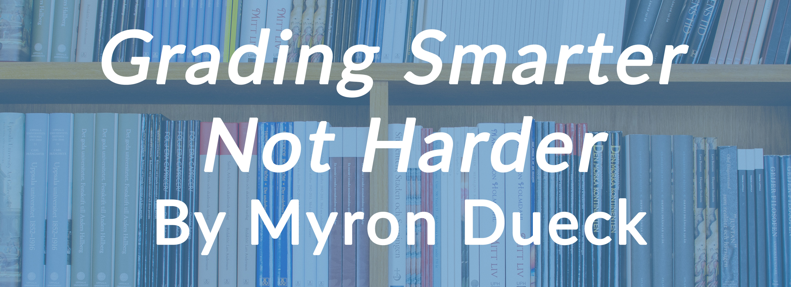
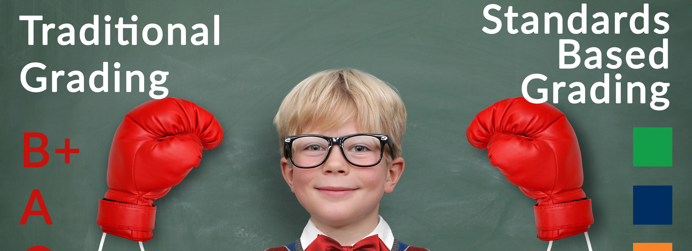

Resource Review: Grading Smarter Not Harder 3/14/2016
Myron Dueck’s book looks at practical assessment strategies that will motivate students and help them learn. As you read, you will quickly realize that Dueck is an experienced teacher who seeks to put into practice the research-based ideas of Ken O’Connor (cf. A Repair Kit for Grading: 15 Fixes for Broken Grades, also on our AERIES Teacher Resources page). We hope that this review/summary will provide you some grading and assessment ideas to try in your own classroom.
Traditional Grading vs Standards Based Grading 3/14/2016
Aeries has been at the forefront of grading policy changes and new grading theories for many years. With our gradebook calculations, algorithms and full-featured grading possibilities, Aeries is a leader in the process of changing from traditional grading to standards based grading. Using our Gradebook, clients have been able to seamlessly implement standards based grading. With that in mind, we would like to offer some insight into the theory behind traditional grading vs. standards based grading.
Michael A. Schenck Scholarship 3/6/2015

Aeries is proud to offer our first student scholarship. Many clients have inspired us over the years that have contributed to their communities and districts. One of those inspirations came out of Konocti School District, an Aeries client for years. Michael A. Schenck was the Technology Director and his recent passing has only fueled our passion to give back to the communities we serve. Michael was known personally by our staff and is remembered for his passion for technology, environment, family and student success. So to commemorate his life and passion for technology we created this scholarship and are honored to use Michael as our inspiration. The first annual award will only be available to Konocti USD students that are in the 2016 or 2017 graduating class.
Implementing O’Connor’s 15 Fixes Using the Aeries GB 3/6/2015
After a brief introduction on the purposes of grades and the underpinning issues of fairness, motivation, objectivity and professional judgment. O’Connor presents 15 fixes for broken grades because of practices that distort achievement, use of low-quality or poorly organized evidence, inappropriate grade calculation, and the need to support learning.